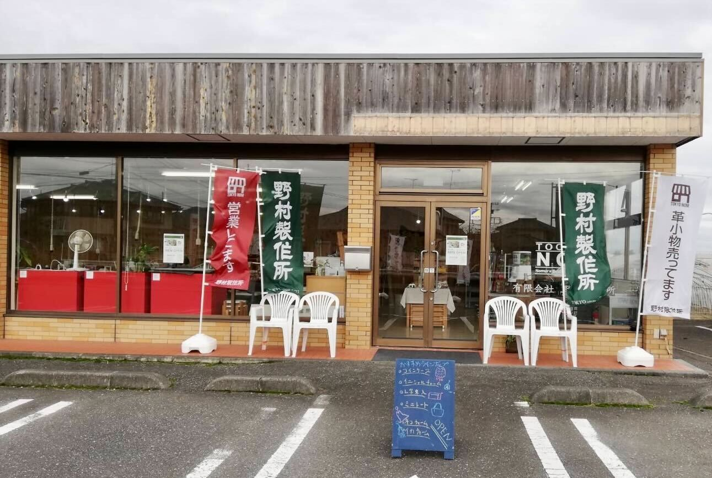

Message
ときどき顔を見たくなる職人、
ふっと立ち寄りたくなる製作所。
革小物メーカーとしては国内最大規模のサンプル室を持つ、OEM生産のプロフェッショナルです。
20〜70代という幅広い年代の職人が、どんなご依頼にも真摯に対応いたします。ときどき顔を見たくなる職人、ふっと立ち寄りたくなる製作所。そんな身近な存在でありたいと願っています。
確認：代表あいさつ（代表者名・写真）を載せるか
- 1923大正12年 創業
東京・東上野 - 25人専属の職人
20代〜70代 - 約8,500個国内の月間生産数
（自社工房） - 約50,000個海外の月間生産数
（協力工場2社）
History
沿革
確認：創業以降の出来事と年- 1923大正12年
東京・東上野で創業。キセル入れからものづくりを始める
- 2022
ブランド「CROCCO（黒子）」を立ち上げ
- 2025
アトリエ兼ショップ「のむのもの。」をメゾン野村1階にオープン
- 2026
「のむのもの。」オンラインストアを開設
Outline
会社概要
- 会社名
- 有限会社 野村製作所確認：正式社名
- 英語表記
- NOMURA SEISAKUSHO CO., LTD.
- 代表者
- 代表取締役 野村 俊一
- 創業
- 大正12年（1923年）
- 本社所在地
- 〒110-0015 東京都台東区東上野1-28-10 メゾン野村2階
- 電話 ／ FAX
- 03-3837-2314 ／ 03-3837-1438
- 営業時間
- 9:00〜18:00（土日・祝日休み）
- 資本金
- 4,000,000円
- 社員数
- 20名（パート含む）／専属職人 25人
- 職人
- 小物技術認定（皮革部門）試験 一級保持者が在籍
- 事業内容
- 革袋物製品（財布、ポーチ、ペンケース、ブックカバー、ノベルティ等）の企画・製造（OEM）
自社ブランド「のむのもの。」「CROCCO」の企画・製造・販売 - 主要取引先
- 大手アパレルブランド
- 所属団体
- 一般社団法人日本バッグ協会／日本鞄ハンドバッグ協会／日本バッグ工業連合会／東日本バッグ工業組合
Locations
拠点・アクセス
 確認：本社・工房の写真（人物が写らないもの）
確認：本社・工房の写真（人物が写らないもの）本社・工房
- 所在地
- 東京都台東区東上野1-28-10 メゾン野村2階
- 営業時間
- 9:00〜18:00（土日・祝日休み）
- 電話
- 03-3837-2314

CROCCO603（ギャラリーショップ）
- 所在地
- メゾン野村 603号室
- 営業時間
- 13:00〜17:00（平日のみ・予約制）
- SNS

栃木営業所
- 所在地
- 〒329-4411 栃木県栃木市大平町横堀526-1
- 営業時間
- 10:00〜16:00（水〜金）
- 電話
- 0282-25-7368
Google マップ（埋め込み）
- 最寄り駅から
- 都営大江戸線・つくばエクスプレス 新御徒町駅（A1出口）徒歩4分
東京メトロ銀座線 稲荷町駅（1番出口）徒歩5分
JR上野駅（入谷改札・パンダ橋口）徒歩10分／JR御徒町駅（北口）徒歩10分
Contact
お問い合わせ
OEMのご相談、コラボレーション、取材・撮影協力、採用など、お気軽にご連絡ください。